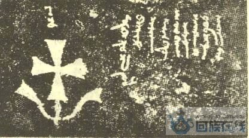
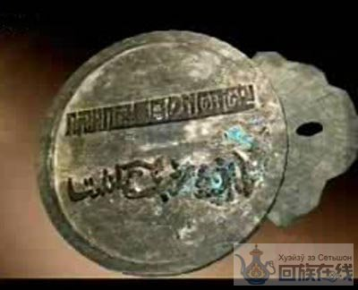
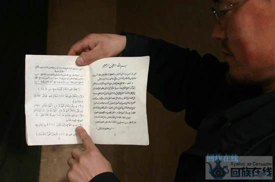
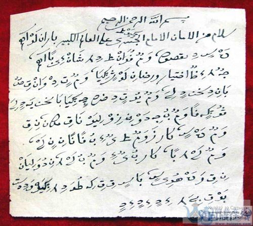
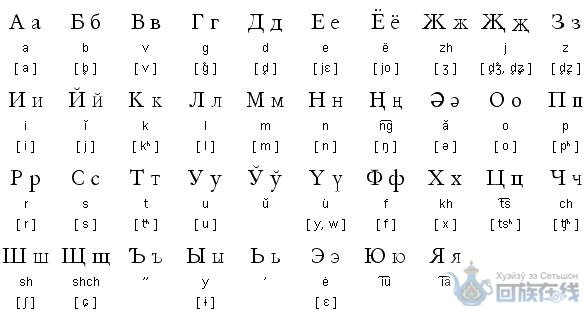

回族由于散居各地和封建王朝的压迫，经过长期的发展，时至今日在日常生活中多使用汉语，但这并不能说回族没有自己的语言和文字，我们要尊重它的存在，像尊重这个民族一样去尊重她的语言。
回族语言文字的历史
唐、宋时期，从波斯、中亚一代通过丝绸之路来华贸易的商人，把古波斯语为主的语言自然而然地带到了中国。古波斯、阿富汗（大月氏）、历史上中亚的昭武九姓胡、粟特人等多属伊朗语系和文化范畴，历史上的康居、大宛、史国、石国、吐火罗、米国、安国、大夏、何国、火寻、条支、安息等地其实都是不同时代对东西伊朗这一带或区域内的称谓，这些小国使用的多为粟特语，粟特语属于古波斯语的东部方言，是东伊朗语的一种，文字则是在古波斯安息王朝官方文字阿拉美文草书基础上根据粟特语发音特点创立的，其他东伊朗语支还有：西徐亚语(Scythian) 、古奥塞梯语(Old Ossetic)、花剌子模语(Chorasmian)、大夏语、巴克特里亚语(Bactrian)、于阗语(Khotanese)等。隋唐或更早时期，古波斯人和操粟特语的中亚胡人已深入黄河流域，并开始在大江南北经商、建立蕃房，“胡人之多，藁街充斥。”是回族比较早期的先民，仅唐代长安一城内就有四千余户。

古波斯的东部方言——粟特语碑文 粟特语是丝绸之路上最早的国际通商用语。
.jpg)
古波斯的东部方言——粟特文书信
元代，由于成吉思汗西征，大批以花剌子模为主要成分的回回人随之迁徙到中国来，花剌子模居民使用的花剌子模语也属东伊朗语支，据《元史百官志》记载，当时朝廷专门设立了“回回国子学”、“回回国子监”这类学习研究回回语言文字的机构。徐霆的《黑鞑事略》把当时元朝通行波斯文称作“回回字”。《黑鞑事略·疏证》中记载：“鞑人本无字书，然今之所用，则有三种：行于鞑人本国者，则只用小木，长三四寸，刻之四角……此小木，即古木契也。行于回回者，则用回回字，镇海主之。回回字则有二十个字母，其余只就偏旁上凑成。行于汉人、契丹、女真诸亡国者，只用汉字，移剌（耶律）楚材主之。”元人陶宗仪在《书史会要》中也有关于回回字的记载：“回回字，其母凡二十有九。横行而写，自前向后，复归于前。”陶宗仪不仅指出了字母数，而且明确说明了其书写规则，此外，他还在书中载录了这29个回回字母。当时还有一种叫做“亦思替非”的速写文字，通常为回回财务会计人员所使用。
由于元代的开放政策，回回人不但讲波斯语为主的语种，朝廷还为回族使用这些语言文字提供了有利条件。直到元末明初，虽然有一些政治、经济、文化的上层回族人士，处于社交和仕进也学习汉语，但在整个回族内部主要还是使用波斯语。这一时期，在回族当中还出现了波斯文与汉文对照的各种公文、门牌、腰牌甚至通行证等。同时宋元时期的回回色目文人和官员，作为承上启下者，他们一方面作为统治者的得力助手要把事情做好，一方面要同汉人搞好关系，对上对下，均要小心翼翼。在熟练掌握波斯语、蒙古语的同时，他们还要能以高难度的古汉语写诗度曲与汉族精英交流。

中国元代的波斯文令牌（译文：持此夜行）
明朝初期的洪武元年（公元1368年），据说皇帝曾下诏禁止胡服、胡姓、胡语，回族的语言被压制，但波斯文在回族人生活中依然占有重要地位。如洪武十二年(公元1379年)，朝廷在这一年设立回回博士科。随后永乐朱棣皇帝的“永乐之宝”玉玺，也是用汉、波斯、蒙古3种文字书写。2005年6月28日在南京大学召开的，南京大学与边疆研究所主办并有多位伊朗学者参加的“古代和中古伊朗的历史文化及中伊交往研讨会”中，南京大学刘迎胜教授发表了题为“波斯语在中国——13至16世纪”的报告，报告指出中国蒙元时期以波斯语为最重要的外交语言，用以与中亚、西亚乃至欧洲交往；提出直至明初波斯语依然是中国交通外邦最重要的外交语言，并举出具体例证：如见于《永乐大典》记载的明初派使团出使埃及的资料中称尼罗河为“卢地尼勒”，就是波斯语。著名回族航海家郑和所率领的下西洋的舰队外交语言也是波斯语，显著的例子是今天保存在斯里兰卡科伦坡国立博物馆的用汉、波斯及泰朱尔三种文字刻写的石碑，郑和派往天方（麦加）和麦地那的回回通事（元代的回族翻译官）所操语言亦为波斯语。明朝多次派往中亚的使团也使用波斯语，最显著的例子是“明成祖致沙哈鲁国王国书”这份国书的中文简本见于《明史·哈烈传》，系由明成祖朝都指挥使白阿儿忻台（Bai arkintay）出使帖木儿汗国时所携。其波斯文全译本见于帖木尔朝史家哈肥子·阿卜鲁的著作《历史精华》，这份波斯文本国书含有许多用波斯语音译的汉语词汇，系中国境内的波斯语通事译成，且具有汉文化背景。
明朝政府在15世纪建立的负责翻译波斯语文的机构和学校——回回馆。回回馆始建于南京后迁往北京，到18世纪中叶大约存在了约340年之久，以明朝永乐年间的《回回馆杂字》和《回回馆译语》中的波斯语汉字注音看，当时回回馆中所教授的波斯语音与今天伊朗方言略有区别，更接近现在的塔吉克语和阿富汗的“达里语”，即波斯语中亚方言。达里语在今阿富汗比较常用，甚至有达里语的电影。明朝后期至清王朝，朝廷对外实行封闭政策，不准启用回回姓氏，回族语言自然也受到限制。如清代安徽巡抚鲁国华向皇帝告御状，说内地回族“异言异服”，请求取缔。清王朝还采取措施，强迫回族迁徙，分布成诸多小群体的回族大都生活在周围多是汉族的环境下。这样使回族的语言逐渐衰落，而因逼迫和处于日常交际需要学习汉语的越来越多。同时由于宗教变故原因，一些阿拉伯语词汇的使用频率也逐渐增多，但常用的波斯语词汇仍有不少保留。

明末清初的小儿锦书籍

明末清初的小儿锦书信
在历代封建统治者的同化政策下，回族做为一个分布范围广，大分散、小聚居的民族，本民族语言的使用和延续受到了来自多方的阻碍，但是回族人并未放弃对本民族语言的使用。大约在明末清初时期，回族民间又以波斯、阿拉伯等语言为基础，结合中国汉语发音创制了一种特别的文字，俗称小儿锦并广泛应用。如白寿彝教授主编的《回民起义》第三册，收有一帧说明文字为小儿锦的照片和一篇用小儿锦撰写的《纪事》。《秦难见闻记》中收有同治元年（1862）由西安城内递送到回族义军前哨阵地的小儿锦信件。近来在回族民间发现用小儿锦字写的账本、遗书、唱词，还有解放前地下工作者作的工作笔记等，1955年8月，西安刘宗云参加陕甘回族赴东北参观团期间，用小儿锦写下一个多月的参观日记，成为记述新中国风貌的一部小儿锦作品。至今有些地方回族青年男女还用小儿锦写情书。老回回有把学习语言文字叫做“过法儿希”。“法尔希”即“波斯”，现在中亚回族老人仍用“法尔希”或“法热西”的说法，通常称为“过法儿希”，其中的“过”，可谓意味深长：一者，可以理解为“温习”，类似我们常说的“考试前过一遍”的那种理解；二者，可以理解为“熏陶”，类似于“过一遍水”的那种理解；三者，可以理解为“过关”，亦即需要达到预定的掌握程度。凡此种种，都是回族语言文字普遍使用的证明，不同环境朝代的语言文字变化也从侧面见证了这个民族的苦难，凝结着先辈的良苦用心和复杂的情感，见证了各代回族人捍卫民族语言权利的辛酸。
中国回族先辈创作了世界上最早的波斯语语法著作
清初回族经堂教育创始人之一常志美(约1610～1670)，山东济宁人，著有波斯文法著作《海瓦依•米诺哈吉》和《法尔西文法》，是回族经堂教育学员的必读课本，该书不仅流传于国内，而且远传至中亚各地。1980年前后，经伊朗学者谢里亚特（《波斯语辞典》作者之一）考证，《海瓦依•米诺哈吉》是世界上独立创作的最古老的波斯语语法著作，包括了波斯语书面语的绝大多数语法现象。该书经整理已于1981年在伊朗伊斯法罕出版，使其重现光芒。
中亚回族的语言文字
回族是一个跨国界的民族，除了在中国有回族以外，吉尔吉斯斯坦、哈萨克斯坦、乌兹别克斯坦、土耳其、伊朗等国都住有人数不等的回族人。国外的回族都是从中国迁移出去的，在中亚和欧洲人们把回族称为Dungan (东干族)，这一称谓起源于中亚突厥语言的诸民族，TUNGGAN这一名称是由TURUP QALGHAN(站下来的，住下来的)或Dongel（意思是回来）演变而来，与古突厥语里的“豹子”发音近似，用汉语的理解就是“回族”。
在俄语中，用“Dungan”一词做为回族称谓，可以确认在1819年就已出现（1819年《西伯利亚通报》刊载的普季姆采夫在1811年从布赫塔尔敏斯基到伊宁市的游记中）；在英语、德语里1830年代也已出现。此后，“Dungan”在突厥、俄语、英语和其它西方语言中用来指代中国境内外的所有回族人。多数情况下是"Dungani"或"Tungani"，有时也用"Dungens"或"Dungans"。中亚地区的回族人自前苏联苏维埃政权建立后被认定为一个少数民族，创制了本民族的语言，取得了少数民族语言的地位。

中亚回族的东干文字母表
部分当代中国回族常用词汇：
玛沙安拉：好极了。
穆巴里克：祝贺
娅（拼音：nia）:妈妈
穆尔直代：感应
欧乃玛尼：头领
定堪尼：谢谢
则卡提：施舍物
泽力：永恒
扎黑里：文盲
扎米尔： 著名的。
满降：女孩
哲米丽：美丽、漂亮
镇尼：精灵
虎斯鼻：睡觉
主麻： 星期五。
火士鲁：别生气
耒依扎：黑夜
里巴：高利贷、利息
鲁哈：灵魂 。
玛哈尔——聘金
达爵：线
买克鲁海：令人厌恶的行为
麦海勒：聘礼
麦扎孜：谎言
穆巴拉克：吉祥的，幸福的
穆散白罕：食指
荷尔足：月经
穆扎威尔：邻居
乜贴：施舍
拿手：握手
那勒：火狱
者那则： 殡礼
乃绥布：运气，福分
乃随哈：诚实的忏悔
乃子热：诺言
尼尔买提： 食物
尼卡哈： 婚姻
哌雷：精灵
盼闪白：星期四
热依斯：首领
肉孜：尔德节
瑞子给：好处、福气
撒德格：施舍
木纳非格：伪君子，两面派
木什雷开：异己分子
撒迪克——朋友
撒哈伯，又作苏哈白、撒哈拜，意为“伙伴们”
撒以来：乞要者，外客
萨伊：乞丐
塞俩目：真主赐你平安（问候用语）
扫干德： 发誓
色拜布：机遇。
色兰：真主赐你平安（书面问候用语）
色俩目：平安、您好
色瓦布：赏赐、谢谢。
闪白： 星期六。
舍散：施舍
书克兰：谢谢
数迷： 倒霉、不顺利。
绥法提： 品质、质量。
遂拉妥： 桥
塔布：运亡人的轿状器具
塔布匣子：抬亡人尸体的木制匣子
台克迪尔：命运
泰思塔尔：缠头巾
沃尔兹： 劝戒。
乌巴里：可怜
乌巴利克： 祝贺
乌斯塔塔：老师
麦扎：坟墓
希勒木：宽容
小净:洗脸、肘、手和脚
斜闪白：星期二
逊乃：割礼
耶提目：孤儿
伊卜哈目：拇指
伊布涅斯：魔鬼
伊合桑：善良的行为
伊玛目：领袖
依扎布：婚书
以思卡脱： 赦罪
因散：人类
因沙安拉： 托靠主
营 干：作为
无巴里：可怜
无常：死亡
伍思脱：小指
阿卜带子： 小净
阿德里：正直"、"公道"、"正义"
阿格力："智慧"、"智力"
阿给白："结局"、"后果"
阿訇: 波斯语（ākhond）的音译，意为教师，老师
阿兰：世界（引申为胸怀，气度）
阿林（尔林）：意为学者
阿目：平民，老百姓
阿师格："爱人"
阿斯玛：意为"天空"
阿斯曼： 天空
艾合德：独一
艾目热：意为"命令"、“委任”
务斯里：动水，埋葬前的沐浴
艾苏力：意为"根源"、"血统"
艾哲理：到期
巴巴：意为"父亲"、"长者"或祖父往上的辈分
巴推里：意为"虚假的"、"无理的"、"无效的"
巴推尼：意为"内心的"、"本质的"
白黒里：意为"吝啬鬼"
白嘿力：吝啬
白勒可台：吉庆、喜庆
白俩：意为"灾难"、"祸患"
白俩尔：意为"雄辩"
拜提：指"房子"、"家"、"住宅"
邦家："已经"、"大约"等意思
比达尔提：节外生枝，标新立异的意思
别麻热：意为"病"、"疾病"
别玛尔：病症
宾甩：环指
波得盖：即膑骨，俗称膝盖
波赛：意为"接吻"、"亲吻"
伯热克特：意为"吉庆"
彻里：即经常
出散：赠送
达旦 ：愿意嫁（婚礼上女方的用语）
盖毕尔图：愿意娶。如， 婚礼上男方的用语
吊 罐： 淋浴器
堵闪白：星期一
杜失蛮：敌人，仇人
多斯达尼：朋友们
朵斯提：朋友
尔林： 学识
发热西：波斯语
发祖：灵感
法依代：利益
嘎尔代：音调
盖得勒：高贵
高目：学生
格迪目：古老
古瓦希： 媒人
郭什：肉（回族用来专指牛羊肉）
哈必卜：知心人
哈苏：特殊
海地叶：礼物
海里凡(fai)：学员
汗干：许诺
好祸：夏娃
赫特乃：割礼
痕子尔：猪
恨甩：中指
侯都斯：新兴
加玛勒：俊美
候坤：规律
虎士努提：喜欢，满意
卡宾：聘礼
克玛里：完美，完善
克塔布：经典
（编辑：剧艳光）
- 前一则: 回族弹腿（谭腿）的由来与传承简述
- 后一则: 谈西方文艺思维与当代戏曲实践的误区
| 1、什么是高原反应？高原反应有哪些症状？ 高原...[详细] |
| 不是因为西宁的博物馆多，而是西宁的历史密码分散在不同...[详细] |

 01082685337 ALL RRGHTS RESERVED
01082685337 ALL RRGHTS RESERVED EMAIL-zgmzb@sina.com
EMAIL-zgmzb@sina.com